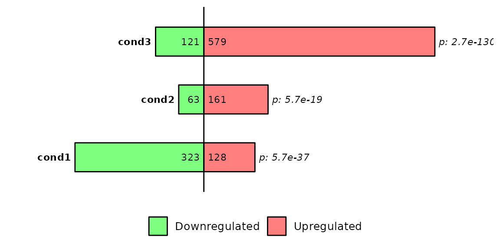
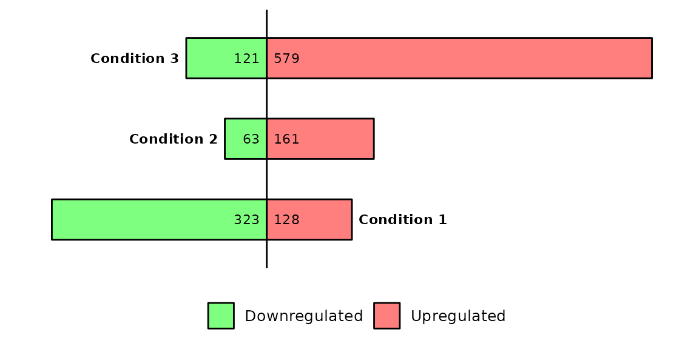

Run barDEGs()
barDEGs() draws an ggplot2-based horizontal barplot with the nubmer of upregulated and downregulated genes coming out from a DESeq analysis.
Required
As input, barDEGs takes a named list of data frames with the columns log2FoldChange, padj and DEG. The DEG column must have the values Upregulated, Downregulated and NS.
# read the dataframes into a list
deg_list <- list.files("../testdata", "diff_exp", full.names = T, recursive = T) %>%
purrr::set_names(paste("cond", 1:3, sep = "")) %>%
purrr::map(~read.delim(.x))
deg_list[[1]] %>% head()## Geneid ENSEMBL log2FoldChange padj DEG
## 1 Gsdmc2 ENSMUSG00000056293.12 2.69 9.334654e-29 Upregulated
## 2 Gsdmc4 ENSMUSG00000055748.12 2.66 1.060432e-28 Upregulated
## 3 Car4 ENSMUSG00000000805.18 2.11 1.883150e-25 Upregulated
## 4 Duoxa2 ENSMUSG00000027225.7 2.97 2.097922e-22 Upregulated
## 5 Neat1 ENSMUSG00000092274.3 -2.25 2.097922e-22 Downregulated
## 6 Gsdmc3 ENSMUSG00000055827.13 2.51 9.601422e-20 Upregulated
Customize plot

Position of condition labels
barDEGs(deg_list = deg_list, name_pos = "right")
barDEGs(deg_list = deg_list, name_pos = "left")
barDEGs(deg_list = deg_list, name_pos = "none")

Further costumization
Since barDEGs() outputs a ggplot2-based barplot, it can be further customized with scales or theme, etc.